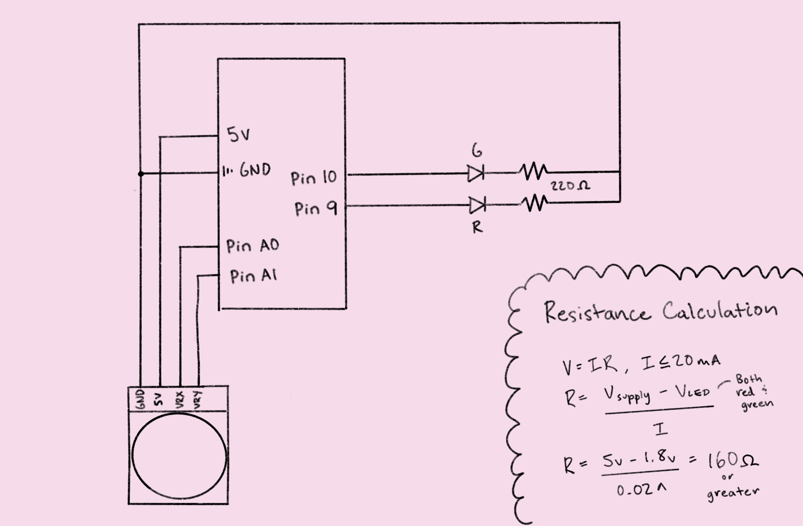
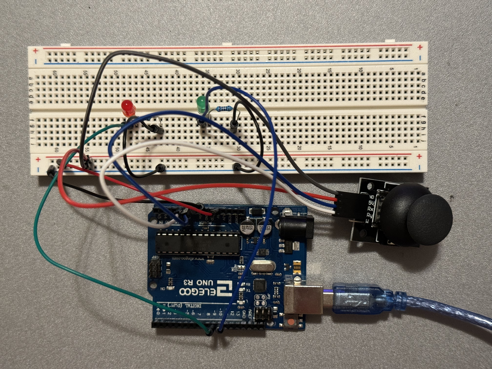

Sehe Choi's Assignment 6: Talking to the web!
Schematic

The circuit schematic shows how a joystick sensor, along with two LEDs (one red, one green)
and their respective 220Ω resistors, are connected to an Arduino Uno. 220Ω resistors were
selected according to the calculations at the bottom right of the schematic.
Circuit
The circuit uses two analog pins (A0 and A1) to read the X- and Y-position of the joystick
and two digital pins (9 and 10) to control the two LEDs independently. Using the analogRead
function, the range of values read from the joystick is 0 to 1023 (10 bits).

Firmware
const int red = 9; // Set red LED pin to 9
const int green = 10; // Set green LED pin to 10
const int xPin = A0; // Set the X pin of the joystick sensor to A0
const int yPin = A1; // Set the Y pin of the joystick sensor to A1
void setup() {
Serial.begin(9600); // Begin serial communications
pinMode(red, OUTPUT); // Initialize red pin to output
pinMode(green, OUTPUT); // Initialize green pin to output
}
void loop() {
if (Serial.available() > 0) { // If there's serial data...
int inByte = Serial.read(); // Read the data
if (inByte == 0) { // If the received value is 0...
digitalWrite(red, HIGH); // Turn on the red LED
digitalWrite(green, LOW); // Turn off the green LED
} else if (inByte == 1) { // If the received value is 1...
digitalWrite(red, LOW); // Turn off the red LED
digitalWrite(green, HIGH); // Turn on the green LED
} else if (inByte == 2) { // If the received value is 2...
digitalWrite(red, HIGH); // Turn on the red LED
digitalWrite(green, HIGH); // Turn on the green LED
}
} else { // If there's no serial data...
digitalWrite(red, LOW); // Turn off the red LED
digitalWrite(green, LOW); // Turn off the green LED
}
Serial.print(analogRead(xPin)); // Send the joystick sensor's X-value over serial
Serial.print(","); // Add a comma in between values
Serial.println(analogRead(yPin)); // Send the joystick sensor's Y-value over serial and start a new line
delay(50); // Delay for 50ms
}
p5.js Code
const BAUD_RATE = 9600; // Baud rate
let port, connectBtn; // Declare global variables
function setup() {
setupSerial(); // Run serial setup function (below)
// Create canvas that is the size of our browser window
createCanvas(windowWidth, windowHeight);
// Set text font, style, and alignment
textFont("system-ui", 50);
textStyle(BOLD);
textAlign(CENTER, CENTER);
}
function draw() {
const portIsOpen = checkPort(); // Check whether the port is open
if (!portIsOpen) return; // If the port is not open, exit the draw loop
let str = port.readUntil("\n"); // Read from the port until the newline
if (str.length == 0) return; // If we didn't read anything, return
let jsArray = str.trim().split(","); // Trim whitespace and split on commas
// Get the difference between the joystick sensor's X- and Y-values
let difference = Number(jsArray[0]) - Number(jsArray[1]);
if (mouseIsPressed) { // If the mouse is pressed...
if (difference > 0) { // If the difference is positive...
background("red"); // Set background color to red
fill("white"); // Set text color to white
text("Red LED is on!", windowWidth / 2, windowHeight / 2); // Write text in the center
port.write(0); // Send a value of 0 to the Arduino
} else if (difference < 0) { // If the difference is negative...
background("green"); // Set background color to green
fill("white"); // Set text color to white
text("Green LED is on!", windowWidth / 2, windowHeight / 2); // Write text in the center
port.write(1); // Send a value of 1 to the Arduino
} else { // If the difference is zero...
background("brown"); // Set background color to brown
fill("white"); // Set text color to white
text("Both LEDs are on!", windowWidth / 2, windowHeight / 2); // Write text in the center
port.write(2); // Send a value of 2 to the Arduino
}
} else { // If the mouse is not pressed...
background("black"); // Set background color to black
fill("white"); // Set text color to white
text("Mouse is not pressed :(", windowWidth / 2, windowHeight / 2); // Write text in the center
}
}
// Three helper functions for managing the serial connection.
function setupSerial() {
port = createSerial();
// Check to see if there are any ports we have used previously
let usedPorts = usedSerialPorts();
if (usedPorts.length > 0) {
// If there are ports we've used, open the first one
port.open(usedPorts[0], BAUD_RATE);
}
// create a connect button
connectBtn = createButton("Connect to Arduino");
connectBtn.position(5, 5); // Position the button in the top left of the screen.
connectBtn.mouseClicked(onConnectButtonClicked); // When the button is clicked, run the onConnectButtonClicked function
}
function checkPort() {
if (!port.opened()) {
// If the port is not open, change button text
connectBtn.html("Connect to Arduino");
// Set background to gray
background("gray");
return false;
} else {
// Otherwise we are connected
connectBtn.html("Disconnect");
return true;
}
}
function onConnectButtonClicked() {
// When the connect button is clicked
if (!port.opened()) {
// If the port is not opened, we open it
port.open(BAUD_RATE);
} else {
// Otherwise, we close it!
port.close();
}
}
Operation

The circuit operates according to these steps: (1) the Arduino sends the joystick sensor
readings to the webpage, (2) if the mouse is pressed on the webpage, the webpage signals the
Arduino to turn on one or both of the LEDs (red if the X-value is higher than the Y-value,
green if the X-value is lower than the Y-value, and both if they are the same), and (3) the
webpage updates its text and background color accordingly.